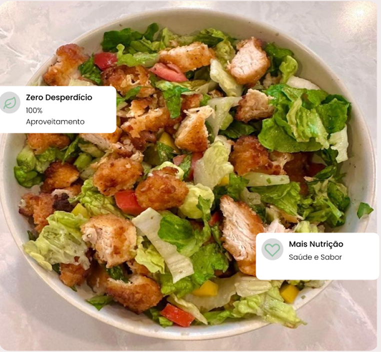

Juntos contra o desperdício
Transforme
Transforme
Sobras em
Receitas Incríveis
Descubra como cascas, talos e sementes podem se tornar pratos deliciosos. Reduza o desperdício e valorize cada parte dos alimentos.
